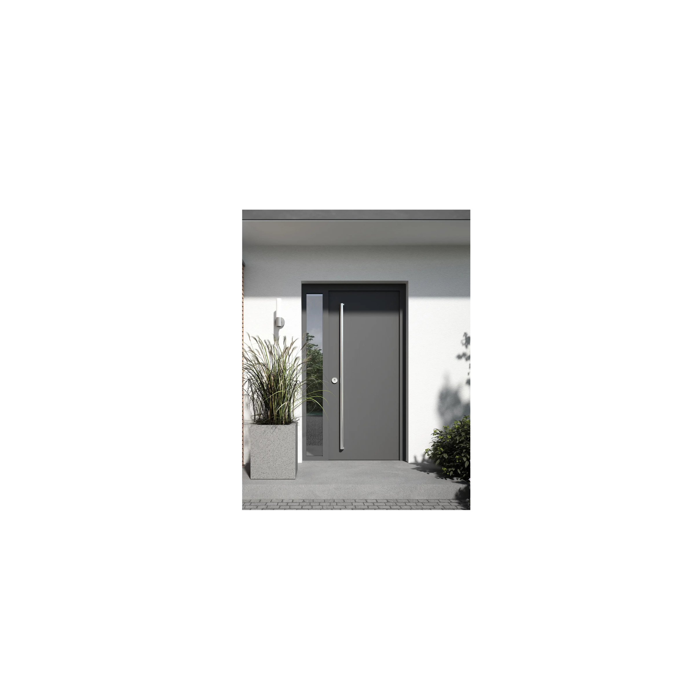
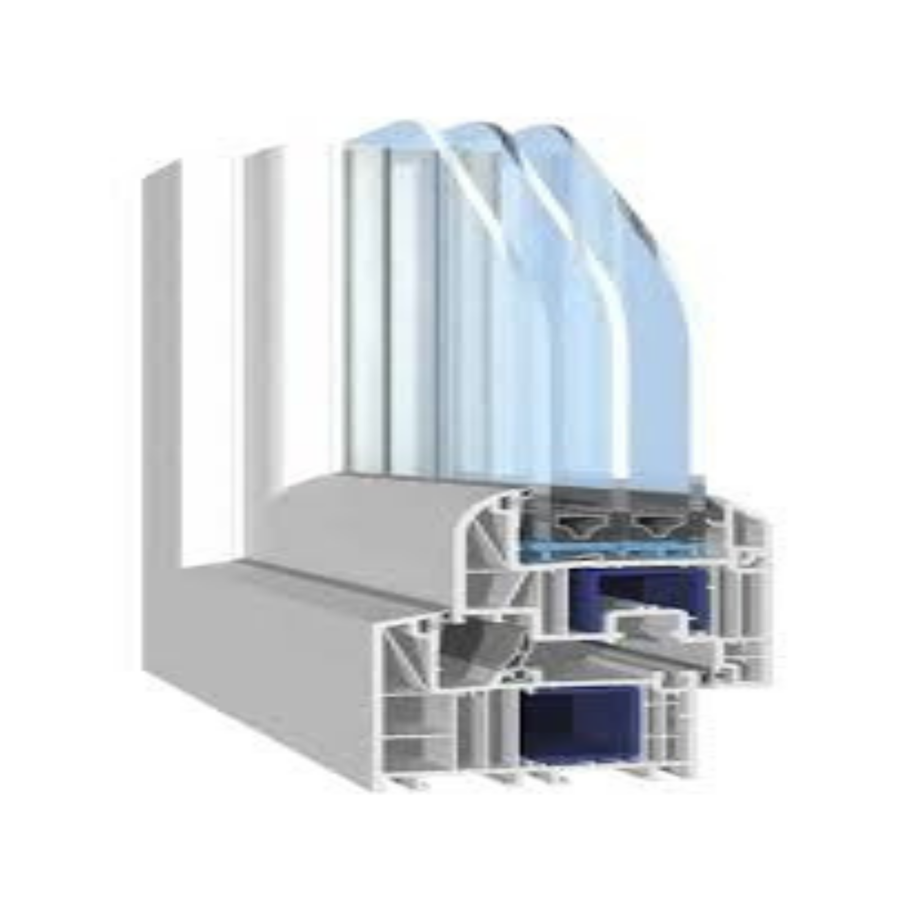

Realizăm exclusiv produse finite (ferestre și uși) fabricate în atelier propriu, conform standardelor producătorului german.

Băltuță Proiect PVC S.R.L. – Producător autorizat Salamander oferim ferestre și uși din PVC de înaltă calitate, realizate în atelier propriu, cu materiale originale și feronerie premium. Ne adresăm atât proiectelor premium, cât și celor cu buget optimizat, garantând durabilitate, izolare termică și estetică impecabilă.
Calitate germană, performanță termică, design modern.

Profile PVC Salamander – standard german de calitate.

Soluții moderne pentru confort, izolare și estetică.
Ferestrele realizate cu sistemul Salamander bluEvolution 82 MD oferă un coeficient de transfer termic redus (Uw performant), contribuind la eficiența energetică a locuinței și la diminuarea consumului pentru încălzire și răcire.
Salamander bluEvolution 82 MD sunt fabricate din profile originale Salamander Industrie-Produkte și echipate cu feronerie germană de înaltă calitate Roto.


Pentru proiectele cu buget optimizat, oferim sistemul Solid 500 — un echilibru perfect între calitate, confort și preț, potrivit pentru apartamente, case de vacanță sau proiecte rezidențiale standard.
Sistemul Solid 500 este proiectat pentru un nivel superior de confort și siguranță, îmbinând un design modern cu performanțe tehnice eficiente. Sistemul îmbunătățit de fixare și etanșarea cu două rânduri de garnituri oferă protecție excelentă împotriva pierderilor de căldură, zgomotului și factorilor externi.
Montaj local + livrări în România și UE.
Realizăm și montăm ferestre și uși PVC în județele Botoșani, Iași și Suceava. Dacă nu ești sigur că acoperim zona ta, te rugăm să ne suni – îți vom oferi toate detaliile rapid.
Produsele noastre ajung în toată România și pot fi trimise în Uniunea Europeană. Suntem deschiși la orice fel de colaborare – parteneriate cu firme de construcții, arhitecți sau proiecte personalizate.
Prețurile se calculează la comandă, în funcție de dimensiuni și finisaje.
Cere ofertă
Dorești să ne adresezi o întrebare?
Contactează-ne pentru informațiile de care ai nevoie și vom reveni cu un răspuns cât mai repede
posibil.